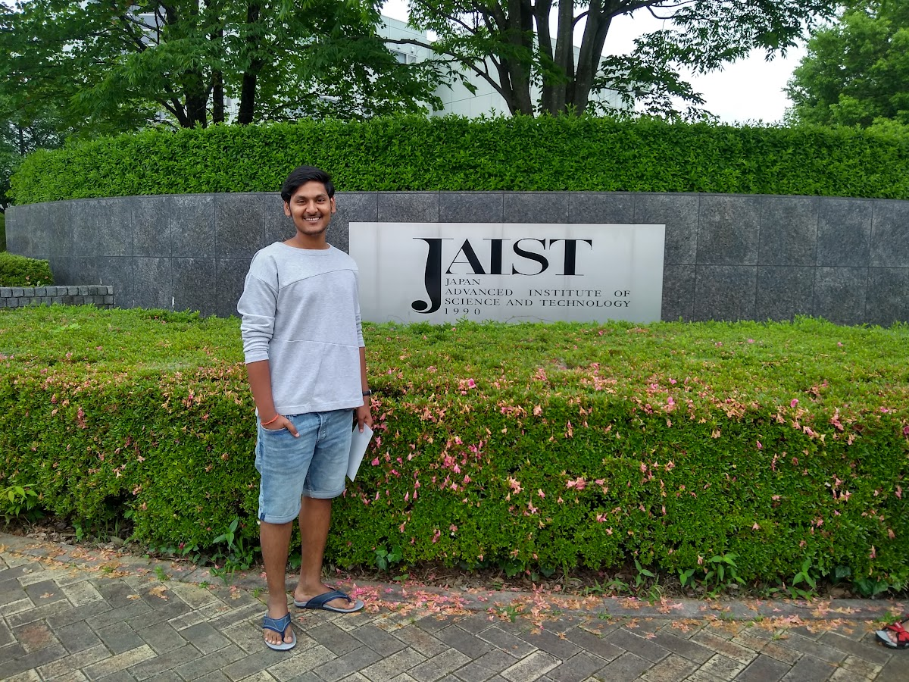
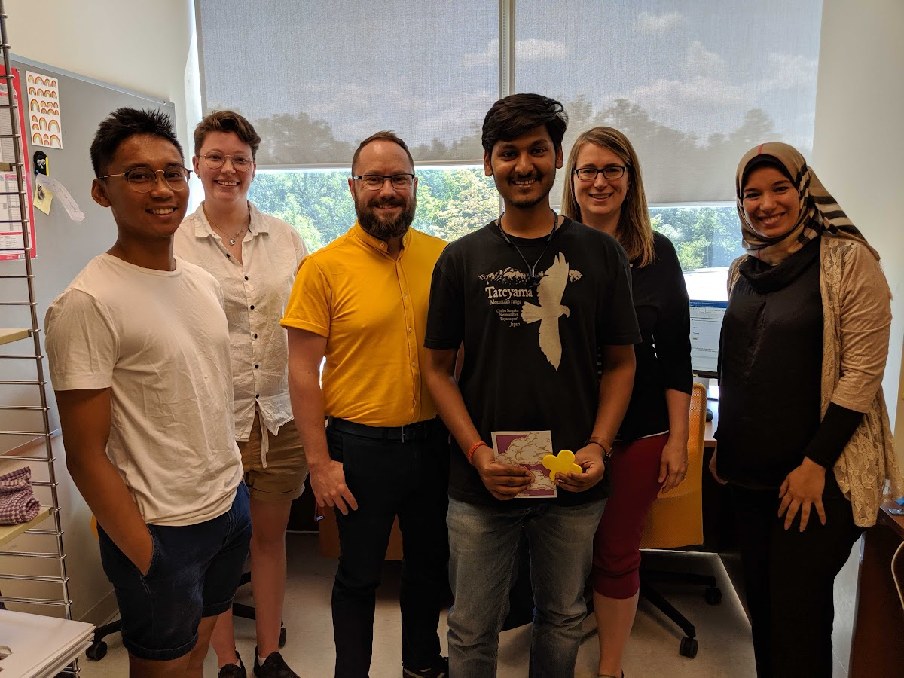
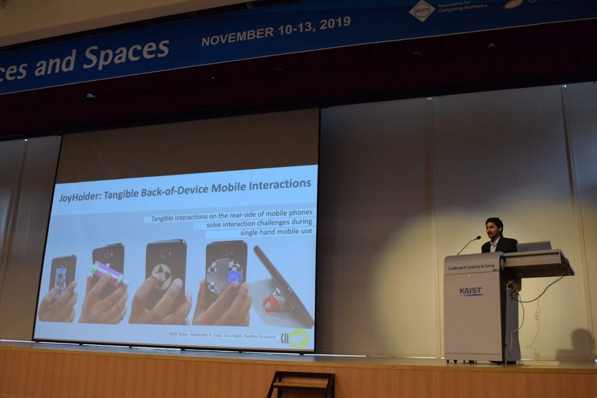
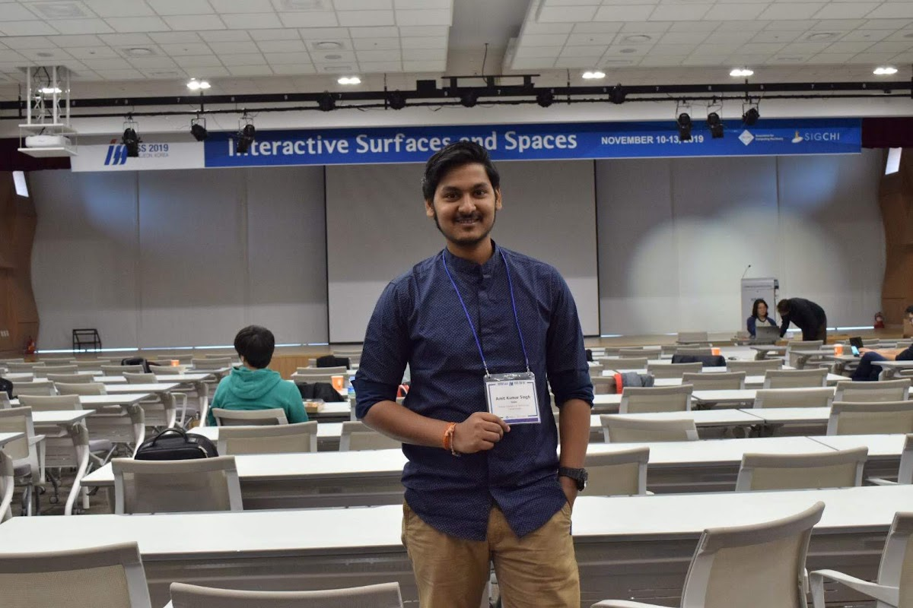
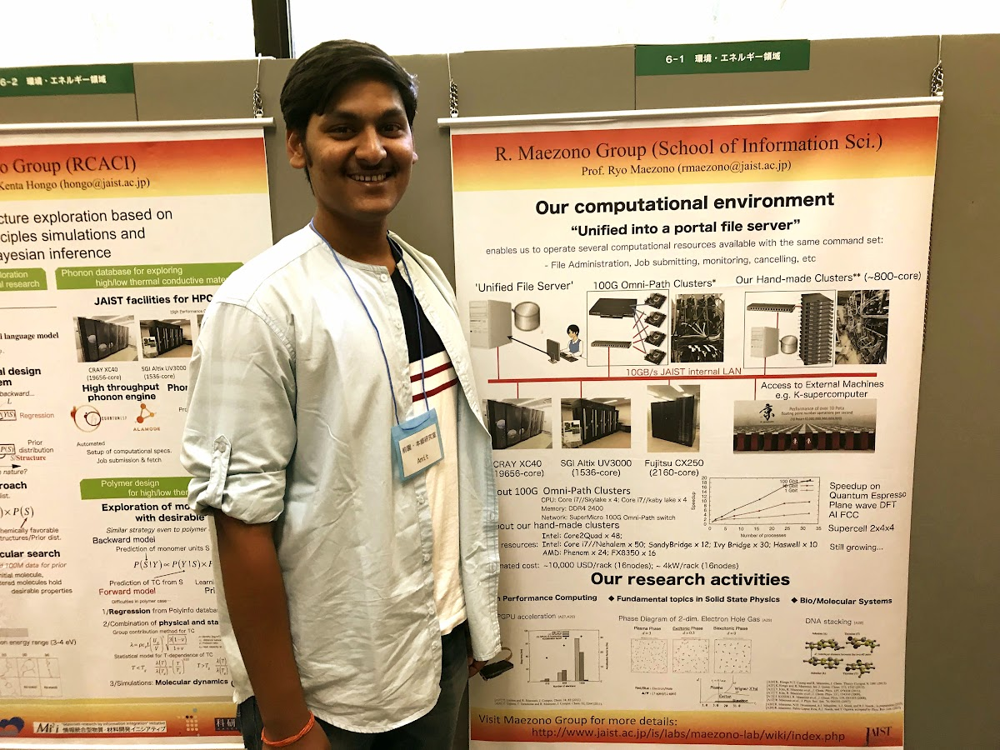
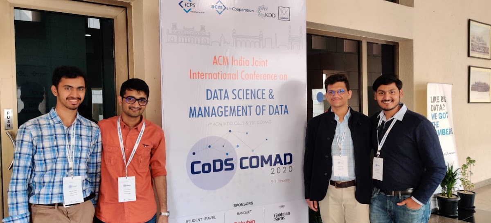

Ishikawa, Japan
Exploring Ishikawa & Tateyama, Japan
Summer research & mountain trails around the Japan Advanced Institute of Science and Technology (JAIST).

Ottawa, Canada
Summer in Ottawa with the CIL Team
With friends and colleagues at Carleton University during my MITACS Globalink summer in Canada.

Daejeon, South Korea
Stage Talk at KAIST (ACM ISS)
Presenting JoyHolder on stage at the Korea Advanced Institute of Science and Technology (KAIST).

Daejeon, South Korea
Visiting South Korea
At the ACM Interactive Surfaces and Spaces conference hall in Daejeon.

Nomi, Japan
Supercomputing Lab at JAIST
Working on Cray XC40 quantum Monte Carlo simulations with the Maezono Group in Japan.

Hyderabad, India
With Co-authors at CoDS-COMAD
Presenting our conversational AI work with IIT Gandhinagar teammates in Hyderabad.